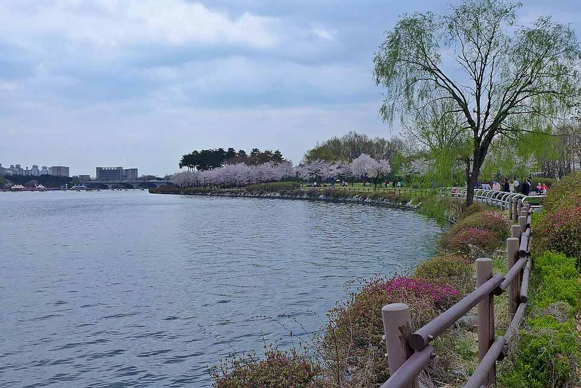

고양 검정고시 — 자녀가 준비할 때 부모가 할 일

아이가 “검정고시로 하겠다”고 말을 꺼냈을 때, 부모 쪽이 더 막막한 경우가 많습니다. 무엇부터 알아봐야 하는지, 어디까지 참견해야 하는지 기준이 없으니까요. 고양 검정고시를 준비하는 가정에서 실제로 도움이 되는 순서를 정리했습니다.
먼저 확인할 것은 성적이 아니라 자격입니다
- 응시 자격 — 중졸 과정인지 고졸 과정인지, 학교를 언제 그만뒀는지에 따라 응시할 수 있는 회차가 달라집니다. 학원 광고 글 말고 시도교육청 공고에서 확인하세요.
- 과목 면제 여부 — 다니던 학교에서 이수한 과목이 있으면 면제되는 경우가 있습니다. 해당된다면 준비할 과목 수 자체가 줄어듭니다.
- 시험 일정 — 검정고시는 한 해에 두 번 치릅니다. 어느 회차를 목표로 할지가 정해져야 계획이 나옵니다. 구체적인 날짜는 뉴스 첫 화면의 일정 안내를 확인해 주세요.
집에서 도울 수 있는 것은 생각보다 단순합니다
공부 내용을 부모가 봐 줄 필요는 없습니다. 대신 시간과 공간을 만들어 주는 쪽이 훨씬 효과가 큽니다. 아침에 일어나는 시간을 고정해 주는 것, 하루 중 공부하는 시간대를 집 안에서 조용하게 지켜 주는 것, 그리고 책상에 앉는 자리를 정해 주는 것. 학교라는 틀이 없어진 아이에게는 이 세 가지가 시간표 역할을 대신합니다.
반대로 “하루에 몇 시간 했니”를 매일 묻는 것은 대개 역효과입니다. 시간을 묻는 대신 “오늘은 어디까지 나갔어?” 처럼 내용을 물으면, 아이도 진도를 기준으로 생각하게 됩니다.
부담은 한꺼번에 지지 않아도 됩니다
검정고시는 전 과목 평균 60점 이상이면 합격이고, 60점을 넘긴 과목은 과목 합격으로 남아 다음 회차에 다시 안 봐도 됩니다. 전 과목을 한 번에 끝내야 한다는 압박이 있다면, 이 제도부터 알려 주세요. 잘하는 과목으로 평균을 올려 두고 약한 과목을 다음으로 미루는 방식이 가능합니다.
고양에서 이렇게 함께합니다
저희는 1:1 맞춤 과외라 첫 수업 전에 어디서부터 다시 시작해야 하는지를 먼저 확인합니다. 학교를 오래 쉰 경우와 최근에 그만둔 경우는 출발점이 다르고, 목표가 고교 진학인지 대학인지 자격증인지에 따라 과목 순서도 달라집니다. 일산동구·일산서구·덕양구 쪽은 방문 수업이 가능하고, 이동 시간을 아끼고 싶으면 화상(줌) 수업으로도 진행합니다. 수업 뒤에는 그날 무엇을 했는지 보호자께도 공유해 드립니다.